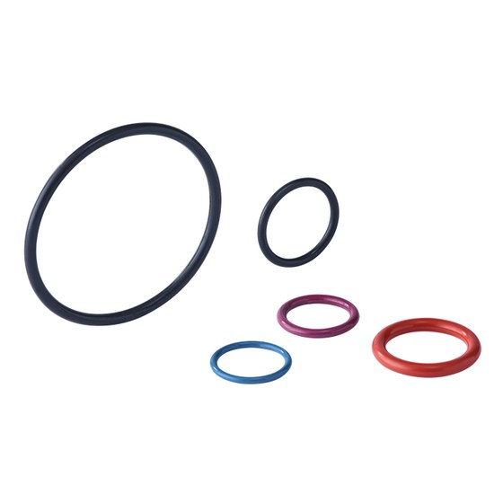
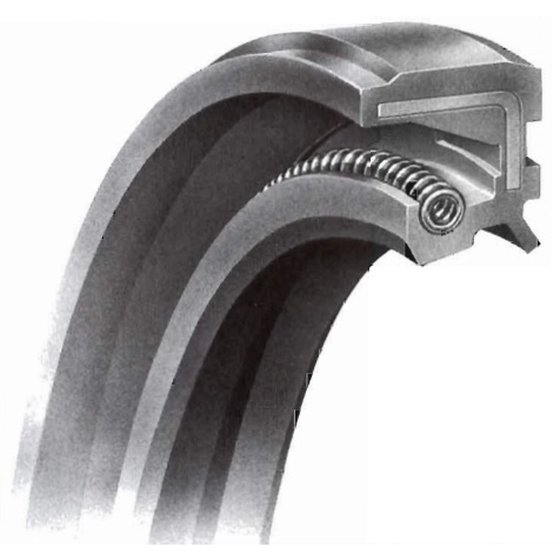
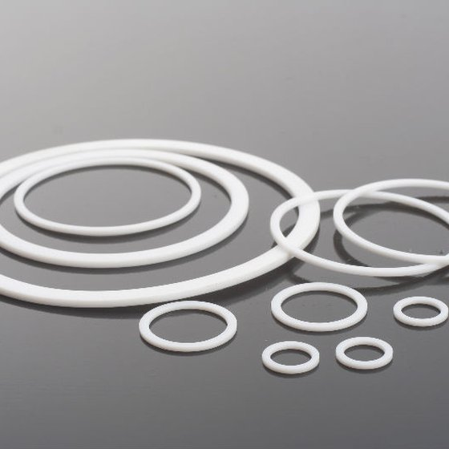
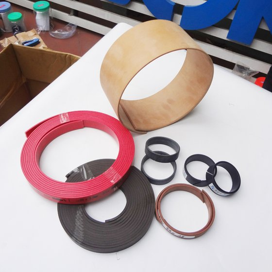

Gioăng
Gioăng sin, gioăng siêu, giăng chỉ (O-ring) theo size tiêu chuẩn.
ABA được các hãng ủy quyền phân phối tại Việt Nam. Bấm vào ảnh để xem rõ.
Vật liệu làm kín cho thiết bị thủy lực và khí nén.

Gioăng sin, gioăng siêu, giăng chỉ (O-ring) theo size tiêu chuẩn.

Phốt ben, cúp ben, séc măng cho xi lanh máy xúc, máy ép, xe nâng.

Phớt trục, phớt chặn dầu mỡ, phớt làm kín đầu trục.

Vòng đệm căn, canh cho rãnh phớt thủy lực.

Bạc dẫn hướng, bạc đỡ ty giữ piston và ty đúng tâm.
Thương hiệu Nhật Bản có nhiều năm kinh nghiệm sản xuất vật liệu kỹ thuật, gioăng phớt NOK rất phổ biến trên thị trường.
Sản phẩm chịu áp suất cao, chịu mài mòn, chống thấm nước và dầu. Vật liệu gồm cao su NBR, FKM (Viton), PU, silicon tùy ứng dụng. NOK cũng thiết kế phớt riêng theo yêu cầu kỹ thuật đặc thù.
Tập đoàn công nghiệp Đức đa quốc gia, trụ sở tại Weinheim, chuyên sản xuất và phân phối vật liệu kỹ thuật, đặc biệt là sản phẩm làm kín và bảo vệ.
Sản phẩm dùng trong ô tô, công nghiệp, chế tạo máy, dầu khí, y tế và nhiều lĩnh vực khác. Các thương hiệu làm kín gồm Merkel, Simrit, CFW, phân phối qua đại lý ủy quyền tại từng quốc gia. Được đánh giá cao về độ bền khi làm việc trong điều kiện khắc nghiệt.
Đường kính trong, đường kính ngoài và bề dày. Còn phớt cũ thì chụp ảnh kèm thước.
NBR chịu dầu thông thường, FKM chịu nhiệt cao, PU chịu áp suất và mài mòn.
Áp suất, nhiệt độ, loại dầu và thiết bị đang dùng.
Gọi trực tiếp hoặc gửi yêu cầu báo giá.
Gửi loại phớt và kích thước. ABA phản hồi qua email hoặc điện thoại.
Công ty TNHH Kỹ thuật ABA
Số 2 phố Ái Mộ, Tổ 8 Phường Bồ Đề, Thành Phố Hà Nội
Điện thoại: 024.3873.8055 / 024.3873.8058
Call/Zalo: 0984.439.151
Email: namktaba@gmail.com